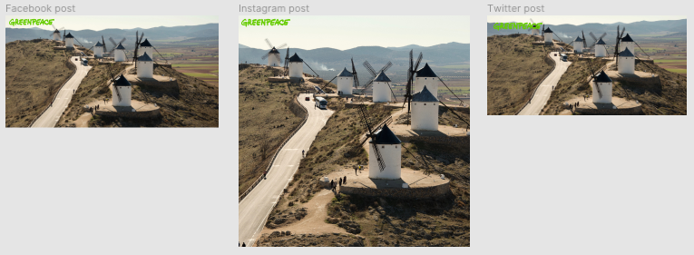

Publishing in social media
Publishing visualisations in social media is challenging because:
- You are limited to publish an individual photo or an individual video and you have limited context.
- The sizes of this images and videos are very specific and different for each social network.
Because in your own website you have context and flexibility in the formats, you should try to attract your social media users there. Post engaging content with a call to action inviting to visit your website instead of trying to inform about complex issues in the social network.
Bellow a guide to create images and simple videos to post in social media:
▸ Images
I've made a template to help creating post images in real size and to export them with the recommended resolution to Facebook, Twitter and Instagram.

You can use this template with Figma, a popular online + desktop design/UX software with a full featured free edition. Create an account, download and import this .fig file. Figma works with Linux, Mac and Windows.
(In the future we can do versions of this template for Illustrator and Inkscape.)
▸ Videos
You can quickly create a screen capture of your visualisations to post in social media and attract visitors to your website. Often it’s enough to scroll trough an infographic or to animate a chart for a few seconds. Publish your video with a link to your web page.
Here's an infographic:
And here's a map:
To record a fragment of your screen you can use Quicktime on your Mac. More info...
I also use VLC to convert the video to the m4v format (mp4), but social networks do a good job converting videos for the web, so this is not necessary. Use VLC only if you want to put the video on a web page.
You can also use a video editor, like for example Open Shot or Adobe Premiere, to edit or combine multiple screen captures into one video.